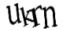

首页
产品介绍
用户版
登录
手机客户端
百度司南
联系我们
申请试用
登录

换一张
安全控件常见问题
忘记密码
领先
数据收集与处理
15年专业数据收集与语义分析技术积累
卓越极致，不断攀登
全面
舆情分析逻辑与架构
声量诊断、传播分析、情感提炼、受众画像
有方法论，更有智慧
© 2014 Baidu
使用百度前必读
专业
专业数据可视化
非凡的数据洞悉和可视化能力
精研数据，惊艳所见
×
感谢您的关注
如需洽谈合作、反馈问题，
欢迎联系我们：
yuqing-help@baidu.com
×
扫码下载
安卓
ios
登录百度舆情
领先：数据收集与处理
全面：舆情分析逻辑与架构
专业：专业数据可视化
安全控件提示
安装安全控件后，请重启浏览器